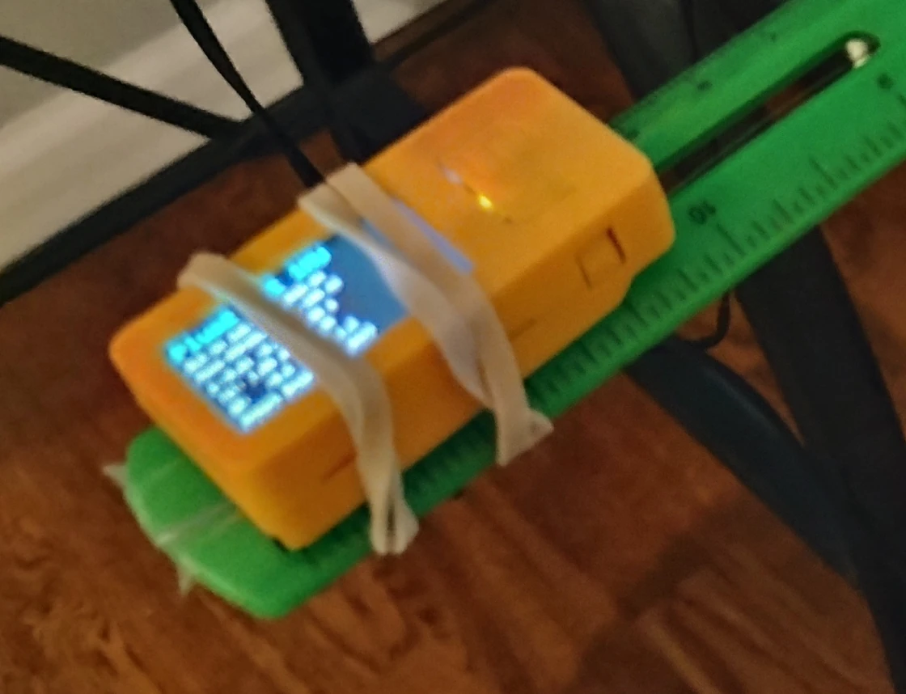
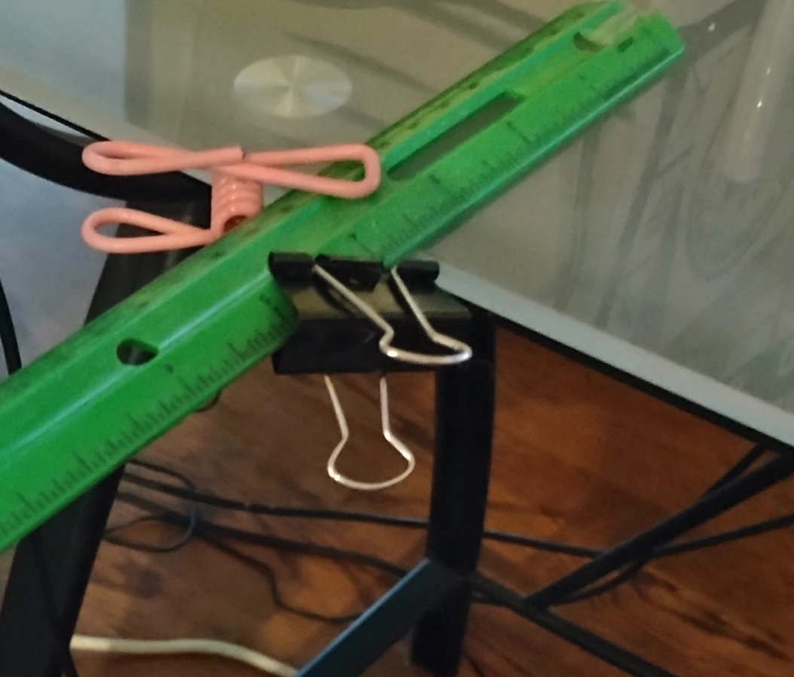
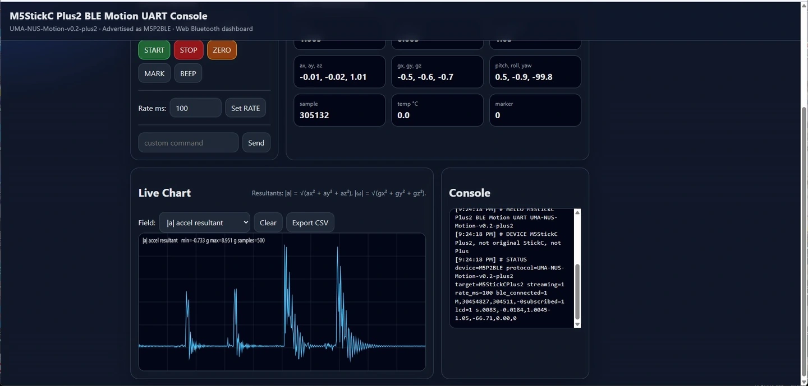
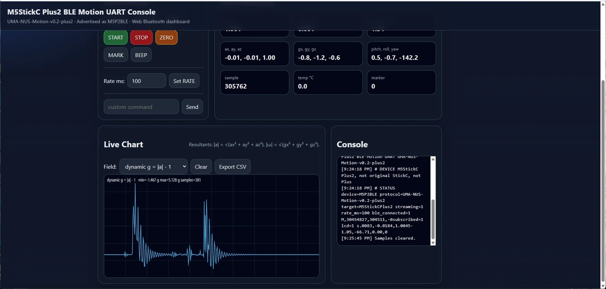
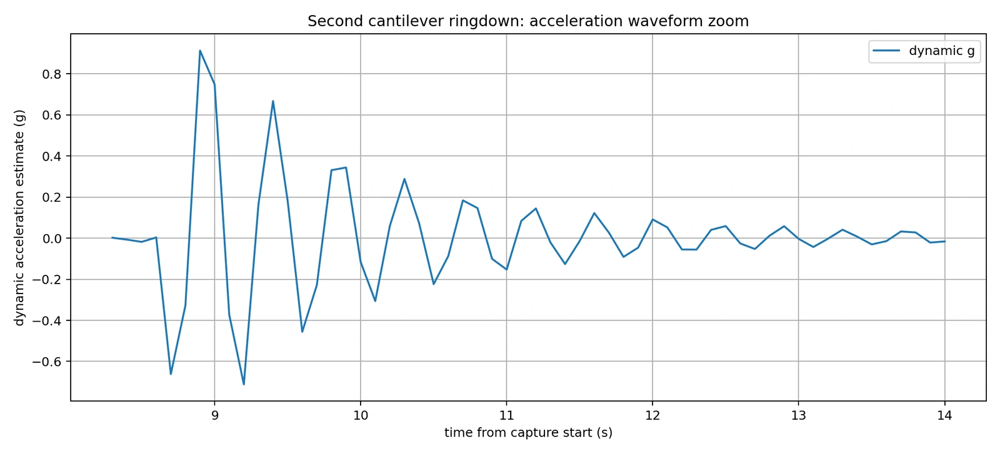
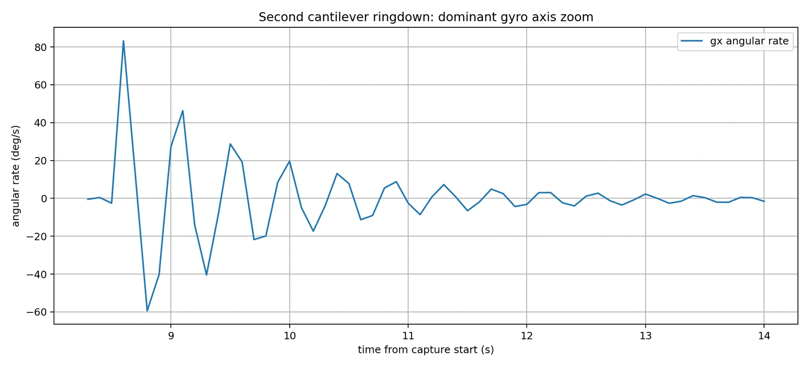
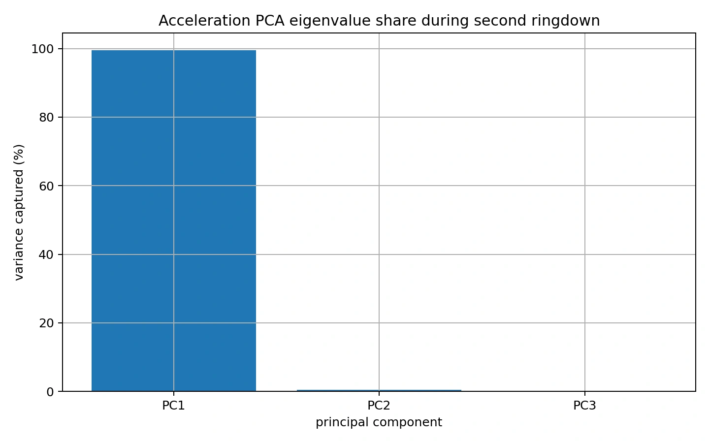
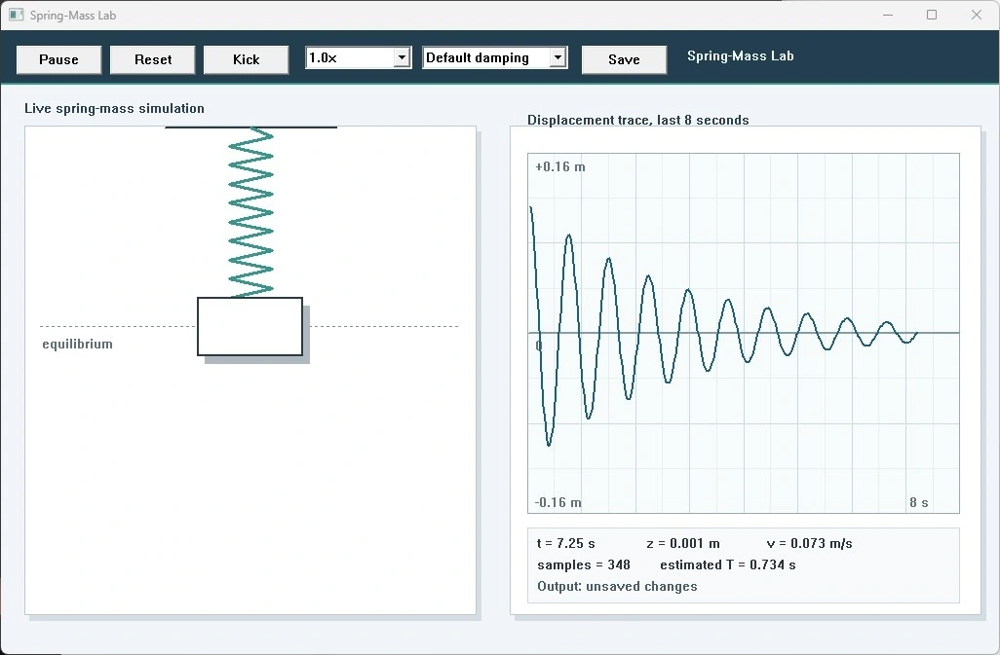

RANDALL YOUNG · FLAGSHIP ACTIVITY · EXPERIENCE BEFORE EQUATION
The Singing Rule
A tabletop experiment that turns one pluck into a waveform, a frequency, and a model.
Clamp a ruler to a table. Pull its free end down a little, let go, and watch. Before anyone writes an equation, there are already three questions worth answering: How fast does it move back and forth? Why does it quiet down? What changes if you shorten it?





Do the experiment first
Use a flexible ruler, a sturdy table, and a clamp. Use a small deflection, keep faces out of the swing path, and secure any device so it cannot fly off. The held end forms the boundary of a cantilever. Measure the free length from the clamp line to the tip, not the total length of the ruler.
- See or hear the difference. Pluck the bare ruler at a long overhang and then at a shorter one. Describe what changed. Use slow-motion video when the motion is too slow to make a useful audible tone. A microphone is a good noncontact pickup if the vibration is audible, but the loudest spectral peak is not necessarily the first bending mode.
- Count before calculating. Record enough clear cycles. Time from one peak to another peak of the same sign several cycles later. Divide elapsed time by the number of complete cycles to get period T, then use f = 1/T. Compare peak heights as the motion dies down.
- Make it an instrument. Secure the M5StickC Plus2 near the tip at a marked location. Start the original-style BLE motion console, wait for a quiet baseline, release, and record the ringdown. Keep device timestamps and acceleration and gyro axes in the CSV. For a first classroom alternative, a micro:bit v2 can stream acceleration over USB. It is a different sensor and adds a different load.
- Repeat on purpose. Run three releases per length, keeping clamp, material, sensor position relative to the tip, and release size fixed within each test condition. Record attached mass, free length, sample rate, chosen axis, and any sample gaps. Compare bare and loaded runs as two different apparatus configurations.




EVIDENCE FROM THE ORIGINAL RUN
One release, three ways to see it
The recovered analysis of the M5StickC Plus2 capture recorded 500 samples in 49.9 seconds at about 10 Hz. In the cleaner second ringdown, the acceleration-derived signal and gyro x both pointed to a dominant oscillation at about 2.24 Hz (roughly 0.45 s per cycle). That agreement is useful. It is not three-decimal precision or an accuracy claim.







- Time domain. Peaks recur at fairly regular intervals while their heights fall. That is the measured ringdown.
- Frequency domain. The FFT makes the dominant rate easier to see. The 5 Hz Nyquist limit and only about 4.5 samples per cycle limit what can be claimed. A repeat at 25–50 samples/s, if the actual timestamps support that rate, would improve this slow-mode capture.
- Direction. In the second ringdown, the first component explains about 99.5% of the acceleration variance and points near device z. The gyro’s dominant direction was near device x. A single IMU tells us about motion at its mounting point, not the full beam mode shape. Tilting the sensor also changes the projection of gravity on its accelerometer axes, so the acceleration trace is not a direct record of tip displacement.
What survives. The apparatus photograph, dashboard views, measured-run plots, and analysis summary survive. The original CSV was not in the recovered bundle. The plots above are preserved evidence, not a newly reproduced analysis. The simulator below does not stand in for those measurements.
Download the archived measured-run analysis summary · Read the source and recovery notes on GitHub
MODEL, NOT BENCH DATA
Pluck the virtual ruler
Try 20 cm, then 10 cm. Predict what the model does before you click. The ideal bare-ruler example uses 8 Hz at 20 cm, so halving the free length gives four times the frequency. The numbers here are illustrative, not fitted to the original 2.24 Hz run.
modeled fundamental


From the curve to the equation. A first model is one damped oscillator, mx″ + cx′ + kx = 0. A cosine supplies the period. An exponential envelope supplies the fading amplitude. For a uniform, lightly damped, unloaded beam with the same cross-section and clamp, the first bending frequency scales approximately as L−2. Attach a sensor and the mass distribution changes. That is a reason to test the model again, not a reason to discard an inconvenient data point.
TEACHER'S CORNER
Can your ruler tell you its own length?
Give each group one ruler and three measured overhangs. Ask them to build a rule that predicts the unknown overhang from a recording of the vibration. Give the rule, units, calibration steps, and limits to another team. That team should be able to use it without asking its authors for help.
First pass
Record the overhang, period from several peaks, and frequency. Plot frequency versus length, then versus 1/L². Which representation is easier to use for a prediction?
Check the claim
Set aside a fourth length. Make a blind prediction, then measure the overhang with a physical ruler and report the error. Try changing only the attached mass to find where the rule stops working.
Extension
Fit the decay envelope or compare spectra across three plucks. Ask why the initial amplitude changes more than frequency in a small-deflection model, and what evidence would make you revise it.
Group handoff. Submit the diagram of your setup, one table of repeated measurements, the model and its calibration, one prediction the other team checked, and one limit on where the model should be used.
Micro:bit classroom adaptation · Virtual Instruments exhibit · Cantilever theory and length dependence